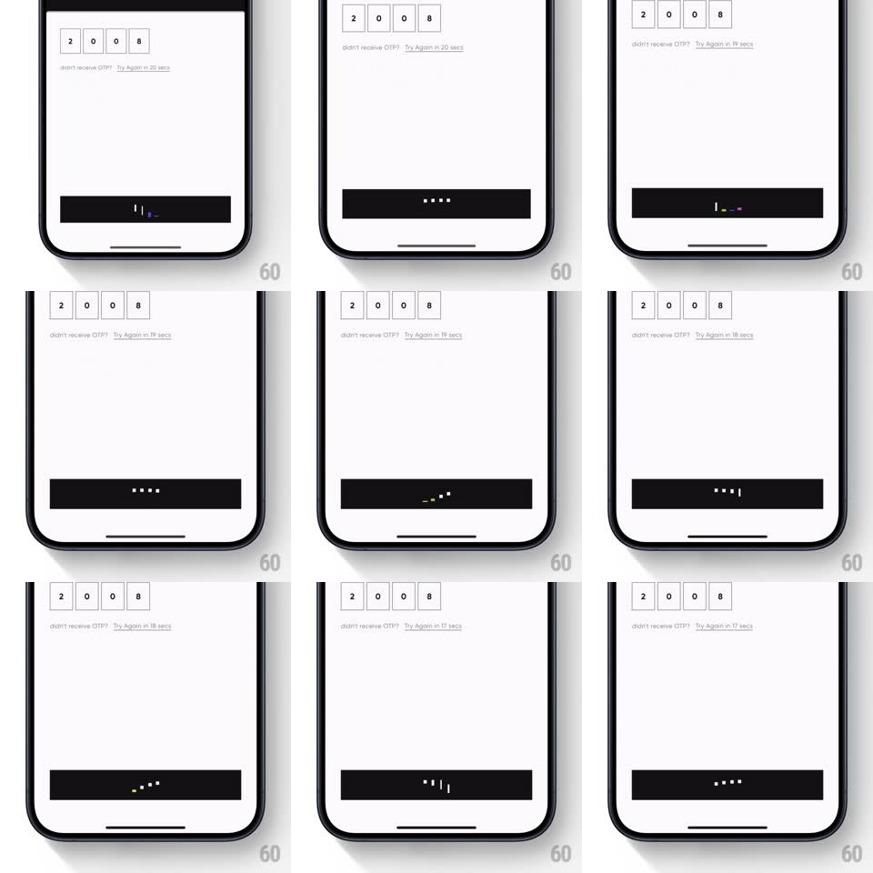

Media
Frame-by-frame

Rebuild this interaction 1:1: CRED's button loader - inside a black OTP-verify button, the label is replaced by five dots that stretch into vertical colored bars and dance like an equalizer, then collapse back to dots, looping while the request runs.

Rebuild this interaction 1:1: CRED's button loader - inside a black OTP-verify button, the label is replaced by five dots that stretch into vertical colored bars and dance like an equalizer, then collapse back to dots, looping while the request runs.
## Integration
Integration: stack-agnostic spec - springs given as stiffness/damping, timed motions as duration + curve; map every value to your framework and animation library of choice.
## Scene
White OTP screen ("you are just one otp away from setting up your wallet", four boxed digits "2 0 0 8", "didn't receive OTP? Try Again in N secs"). Bottom: a full-width black button whose label area hosts the loader.
## Motion spec
Pattern: equalizer loading loop inside a button.
- Five small dots (white, yellow, green, blue, red - CRED accent colors) sit in a centered row.
- Each dot stretches vertically into a rounded bar (~4px wide, 8 -> 22px tall) and back, staggered left to right (~80ms apart), wave period ~700ms.
- Every second pass, the bars tilt slightly (~10deg) mid-stretch, adding a playful wobble, then straighten.
- The button itself never changes size; the loader lives entirely inside its label area.
## Calibration
- The wave reads as one traveling pulse - keep the stagger uniform and the bars' min height never below the dot size.
- Colors follow CRED's fixed dot order; do not randomize per loop.
## Reduced motion
Three dots pulse opacity in sequence (600ms loop), no stretching.
## Don't miss
- The loader replaces the button label in place - the black button does not resize or change color.
- Bars are rounded-end capsules, not rectangles.